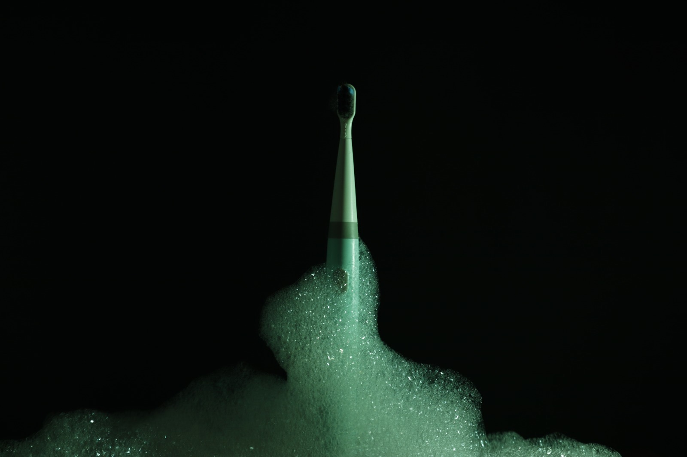
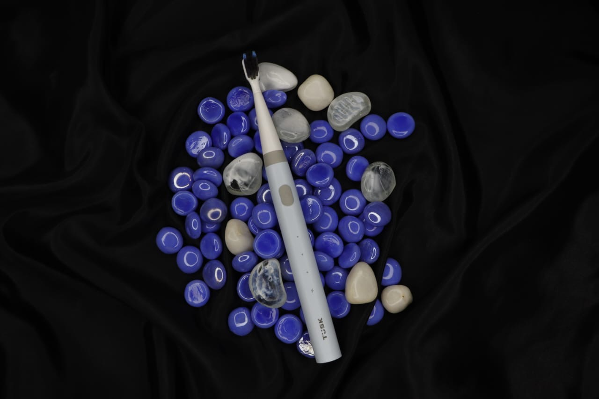

Visual Exploration

Testing moods, colour, and light.
Before settling on a direction, the process moved through a range of colour and lighting treatments — looking for what matched the spirit of the product.

